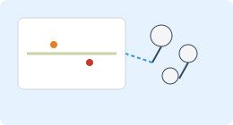

Community & Lehre
GeoHist soll nicht nur Daten bereitstellen, sondern auch Forschung und Lehre vernetzen. Lehrende, Studierende und externe Forschende können GeoHist in unterschiedlichen Szenarien einsetzen.
Einsatz in der Lehre
- Kartenübungen zu Montanrevieren und Lagerstätten.
- Projektseminare mit eigenen GIS-Analysen und GeoHist-Daten.
- Nutzung von Diagrammen und Wissensgraphen in Lehrveranstaltungen.
Community-Beteiligung
Externe Forschende und Institutionen können GeoHist-Daten